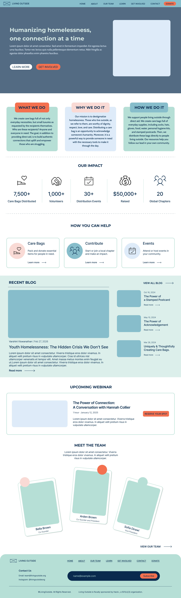
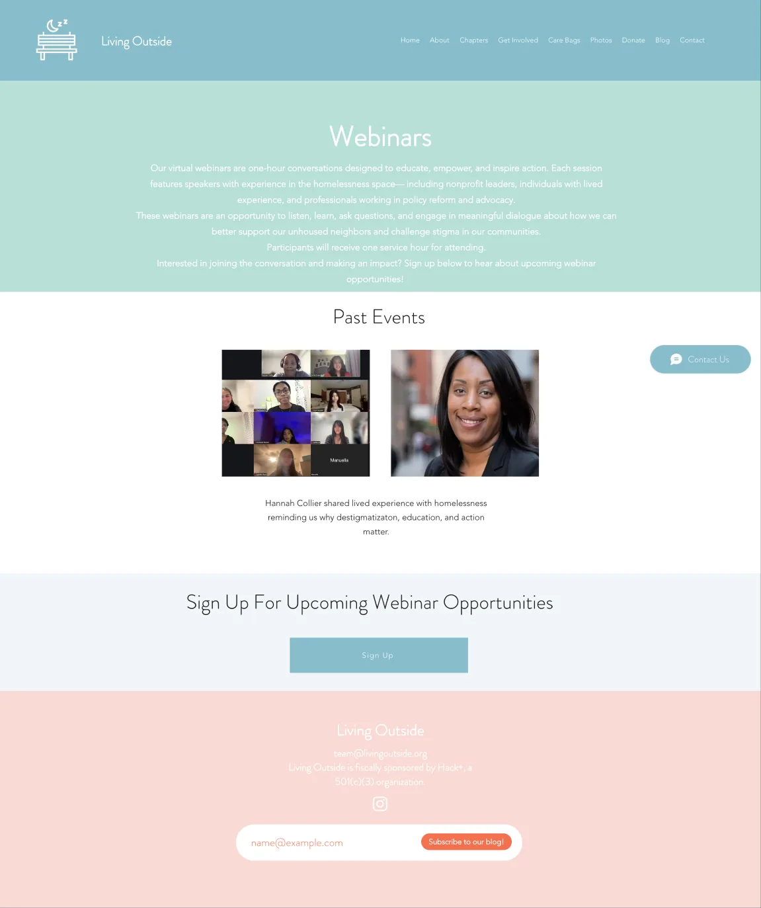
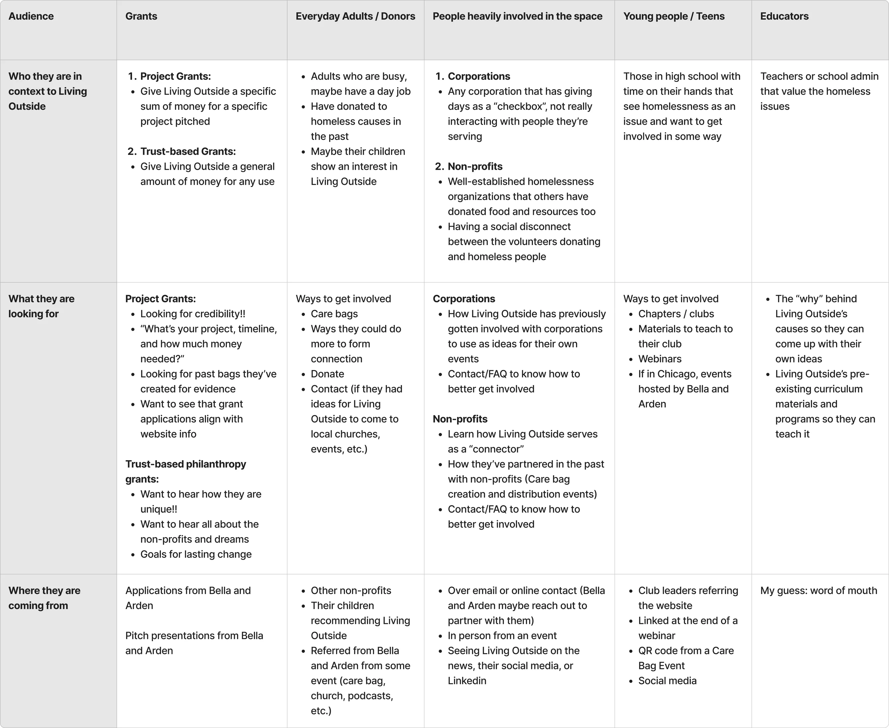
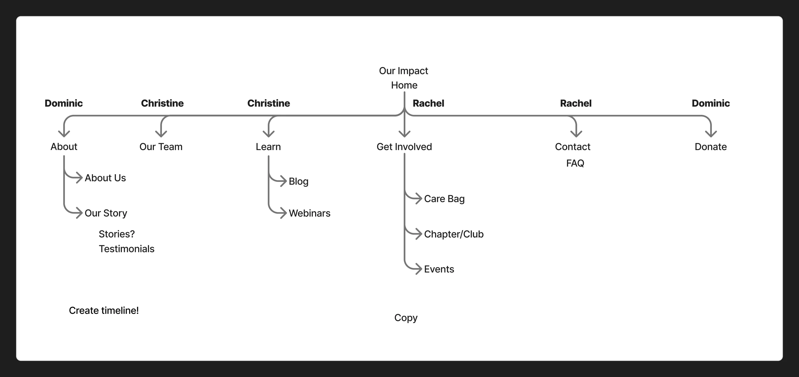
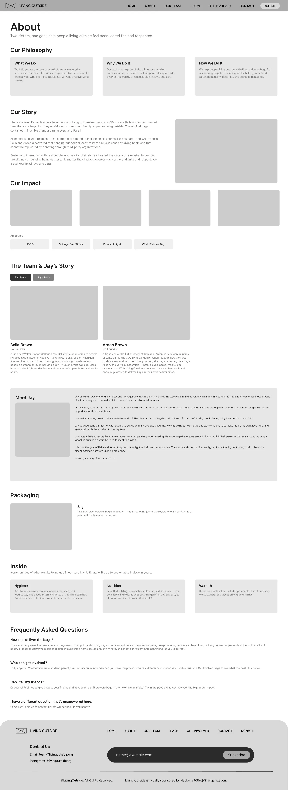
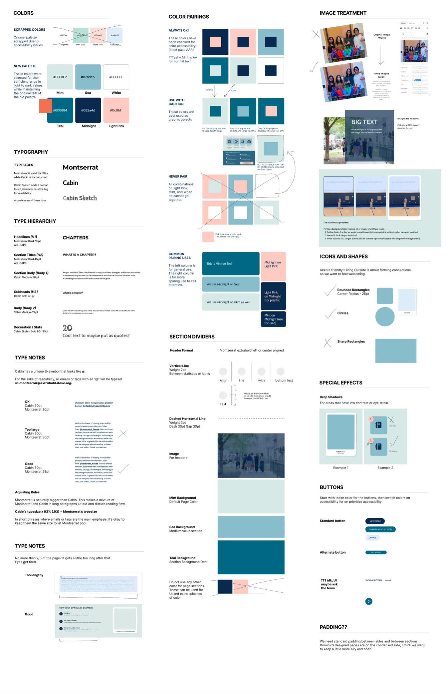
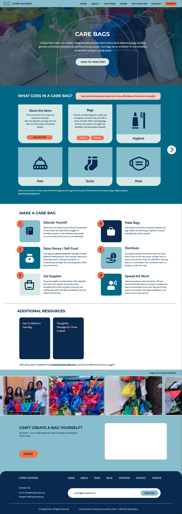
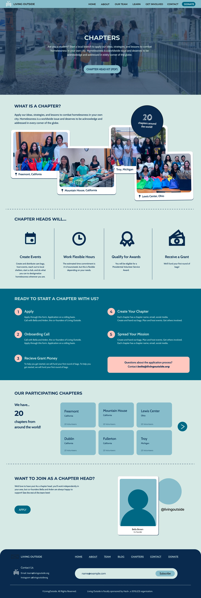
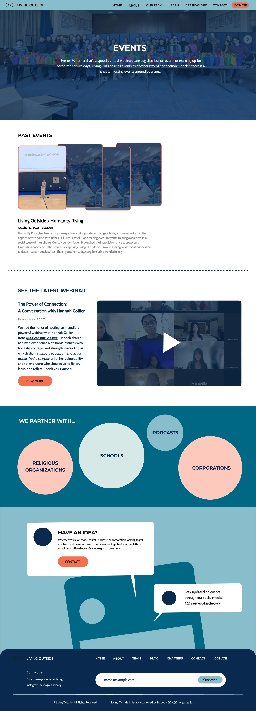
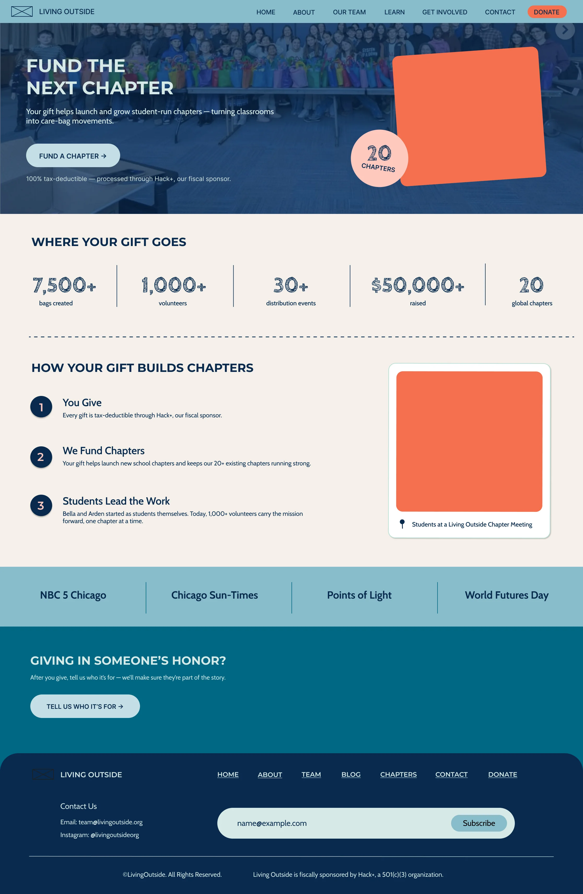

Work in progress
Living Outside
A website redesign for a youth-led nonprofit whose real product isn’t a care bag. It’s the conversation that happens when someone hands one over.

- Role
- UX Design Volunteer: research, navigation, page design
- Duration
- Jul 2026 – present (in progress)
- Team
- 3 volunteer designers, with the co-founders
- Tools
- Figma, FigJam
01 The problem
A nonprofit about connection, behind a website that played hide and seek.
Living Outside is a youth-led nonprofit working to destigmatize homelessness. Volunteers build care bags of food, water, socks, hygiene supplies, and stamped postcards, then hand them directly to people living outside. The bag is not the point; it is the reason to start a conversation.
The old website did not tell that story. Information lived several clicks deep, and buttons led to pages no one expected. The co-founder who built it knew where everything was; nobody else did. In their words, visitors “have to play hide and seek for the information.”

02 Research
Six audiences, one front door.
We started by interviewing the co-founders and mapping who actually arrives at the site and where they come from. The list was long: grant makers looking for credibility, busy adults who want one Saturday of volunteering, corporations planning service days, teenagers who want to start a chapter, and teachers who need structure before they sponsor a club.
That map exposed the core problem. “Get involved” was not one action; it was six. A person who wants to volunteer once and a person who wants to start an international chapter were being sent through the same door.
“Living Outside is a belief. The purpose of the website is to share ideas, not just the care bags.”Co-founder interview
“It works and gets the job done, but it doesn’t reflect what we’ve done in three years.”Co-founder interview

03 User pain points
Everyone wanted to help. Nobody knew where to start.
Personas made the gap concrete. A student like Maya worries about saying the wrong thing. A chapter head like Ethan understands the mission but not the logistics. A donor like David wants to know what his money makes possible. And Marcus, who receives the bags, asks the question the whole project rests on.
First-time volunteers need social guidance as much as a packing list, because the mission depends on the moment of interaction.
- Maya, 17 · Student volunteer
I want to help, but I don’t want to accidentally do something insensitive.
- Ethan, 16 · Chapter head
I understand the mission. I need help turning it into something I can actually organize.
- Rachel, 34 · First-time adult volunteer
Just tell me where to go, what to bring, and what I should know.
- David, 45 · Donor and parent
I want to understand what my donation makes possible.
- Marcus, 42 · Care-bag recipient
Ask me what I need instead of assuming what I need.
- Ms. Rodriguez, 39 · Teacher
I want students to lead this. I just need the structure to do it responsibly.
04 Design response
Fewer clicks, and every button goes where it says.
We rebuilt the sitemap around one rule: each audience should reach its goal in one or two clicks. The home page now answers what we do, why we do it, and how we do it before asking for anything, then splits “get involved” into clear paths: care bags, chapters, and events, with Donate always one tap away in the navigation.
Every page also carries the story. The Care Bags page explains what goes inside and why; Chapters walk a teenager from “what is a chapter?” to applying in five steps.


05 Brand and accessibility
Warm enough to feel human, clear enough to read.
The original palette failed contrast checks, so we scrapped it and built a new one from the same feeling: mint, sea, teal, midnight, and a light pink, each pairing tested against WCAG. Montserrat carries the headlines, Cabin carries the body, and a handwritten Cabin Sketch appears sparingly for the human touch. Rounded shapes and circles replace sharp rectangles, because the brand is about people meeting each other.

06 The pages (in progress)
Each page answers one audience’s first question.
Pick a page, then scroll inside the window to see the whole layout. These are current Figma designs and are still changing with feedback from the team.
What, why, and how come first; then impact, then three clear ways to help.

What goes in a bag and why, then how to make one in six steps. Can’t make one yourself? Donate is right there.

From “what is a chapter?” to applying in five steps, with the 20 existing chapters as proof it works.

Past events, the latest webinar, and the kinds of partners Living Outside works with, from schools to corporations.

Donation framed as funding the next chapter, with where the money goes shown before the ask.
07 Takeaway
Where it succeeds: the moment before someone decides to help.
Most visitors arrive already wanting to do something; the old site made them work to find out what. If the redesign succeeds, a teenager finds the chapter application in two clicks, a busy adult finds a Saturday event without digging, and a donor sees what a gift becomes before being asked for one. The larger question is still open. How might Living Outside turn a simple act of giving into an opportunity for meaningful human connection? A website cannot hand anyone a care bag; it can make the person holding one feel ready to start the conversation.
For volunteers
Clear paths by goal, and less uncertainty about how to approach someone respectfully.
For the organization
A site the founders can point to proudly, and fewer lost visitors between interest and action.
What’s next
A “How do you want to help?” entry, a “5 minutes before you go” guide for first-timers, and a post-event reflection that measures social impact, not just bags.